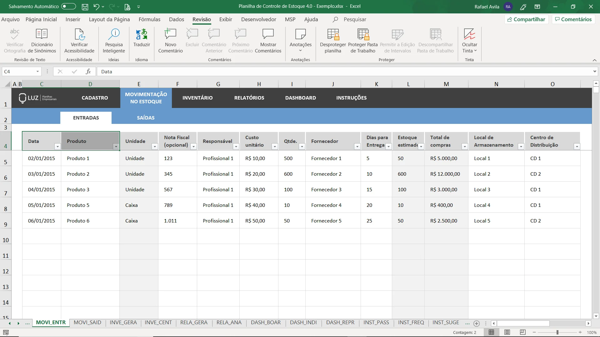

Problema
Cuidar do estoque de um restaurante envolve diversos desafios que podem impactar diretamente a operação e a lucratividade do negócio.
Ideia
Agilize sua vida com o programa EstoqueCerto que te facilitara em todos os assuntos relacionados a controle de estoque, facilite seu trabalho e relaxe.
Nicho
O "EstoqueCerto" ajuda qualquer pessoa que trabalhe no gerenciamento do giro de estoque no ramo Gastronomico, facilitando sua tarefa atravéz da automatização do controle, criando analises em tempo real, integrando com celular ou desktop de sócios ou do proprietario, o "EstoqueCerto" servira para você.
Proposta de valor
Nós do " Estoque certo ", estamos buscando entregar um aplicativo de GRAÇA com a mesma qualidade de um aplicativo "PAGO", tambem iremos disponibilizar uma base de dados para analisar o consumo de alimentos ao longo dos meses.
